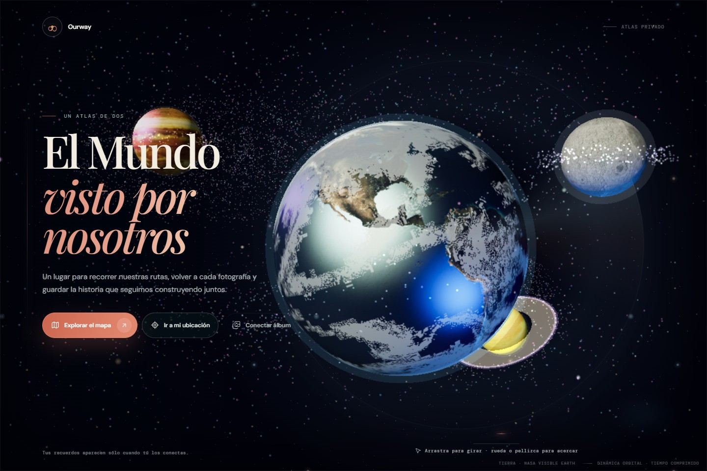

Ourway
Un atlas de viajes con su escena orbital 3D original. La conexión a álbumes privados está deshabilitada.
Demos de Ourway y MyAccountant con datos de ejemplo. No se conectan cuentas ni información privada.

Un atlas de viajes con su escena orbital 3D original. La conexión a álbumes privados está deshabilitada.

Presupuesto, cuentas, movimientos y mascotas originales, con cifras ficticias del conjunto de prueba.